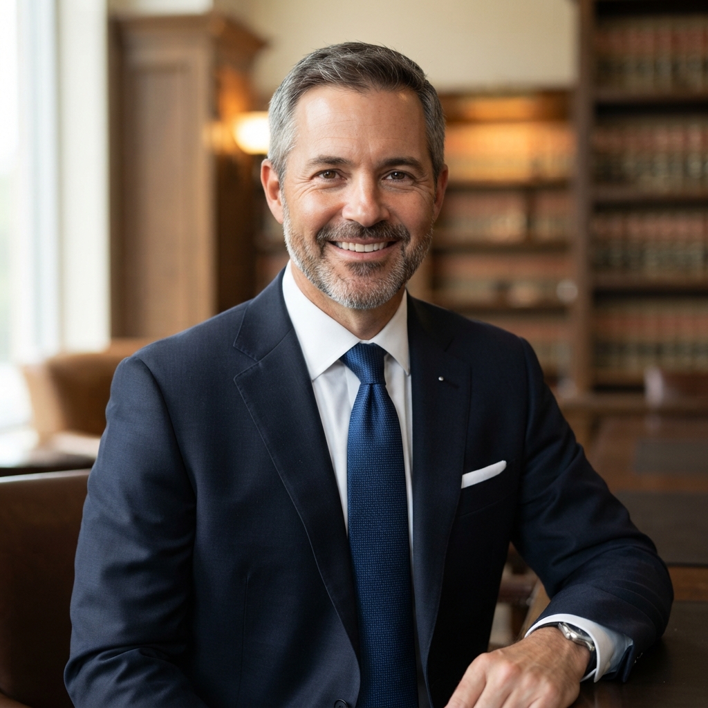

Nuestro equipo está integrado por abogados formados en las principales universidades nacionales, con sólida experiencia en los fueros civil, comercial y laboral de la República Argentina.

Dr. Juan Pablo Ginepro — Socio Fundador
Dr. Juan Pablo Ginepro
Especialidad: Derecho Civil, Comercial y Litigios Complejos
Abogado graduado con honores en la Universidad de Buenos Aires (UBA). Con más de 18 años de experiencia en litigación en el fuero ordinario y federal de la Ciudad de Buenos Aires.
Especialidad: Derecho Laboral, ART y Relaciones de Trabajo
Egresada de la Universidad Nacional de La Plata (UNLP). Especialista en negociación prejudicial, audiencias de conciliación laboral ante SECLO y reclamos por accidentes laborales.
Matrícula: CPACF T° 65 F° 412
Especialización en Derecho del Trabajo y Seguridad Social
Ex asesora letrada de entidades gremiales y corporativas
Especialidad: Derecho de Familia, Sucesiones y Mediaciones
Abogado egresado de la Universidad Católica Argentina (UCA). Enfocado en el abordaje constructivo y confidencial de conflictos familiares, procesos sucesorios y convenios de división de bienes.
Matrícula: CPACF T° 78 F° 205
Mediador prejudicial matriculado ante el Ministerio de Justicia
Diplomatura en Planificación Sucesoria y Empresas de Familia
Todo el equipo letrado participa activamente en jornadas de actualización jurisprudencial, congresos de derecho procesal y seminarios universitarios para brindar a nuestros defendidos una respuesta jurídica moderna, fundada y eficaz.